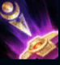
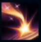
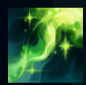
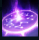
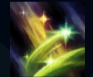

Soraka
| Soraka The Batlle Mistress | |
|---|---|
| Release date | 21.02.2009 |
| Class | Enchanter |
| Positions | Support |
| Resource | Mana |
| Range type | Ranged |
| Adaptive type | Magic |
| Base statistics | |||
| Health | 532 – 1793 | Mana | 325-1175 |
| Health regen. | 2.5 – 11 |
Mana regen. | 11.5-18.3 |
| Armor | 38 – 70 | Attack damage | 52 – 99.6 |
| Magic resist. | 30 – 38.5 | Crit. damage | 175% |
| Move. speed | 325 | Attack range | 550 |
Soraka este o renumită vânătoare de recompense și căpitan de mercenari ce își desfășoară activitatea în deșerturile Shurimei. Înarmată cu un legendar bumerang în cruce, a câștigat nenumărate lupte în numele celor care își permit s-o angajeze. Soraka este cunoscută pentru hotărârea ei de neclintit și pentru ambiția-i nemăsurată, calități de care se folosește pentru a descoperi comori ascunse în cavourile Shurimei – în schimbul unor sume generoase de galbeni, desigur. Acum că Shurima este cutremurată de apariția unor forțe străvechi, Soraka se află la răscrucea dintre două destine contradictorii. |  |
SANCTIFICARE Soraka primește un bonus scurt la viteza de mișcare când atacă un campion inamic |
||
|---|---|---|---|---|
 |
CHEMAREA STELELOR O stea cade în locația-țintă, provocând daune magice și încetinind inamicii. Dacă un campion inamic este lovit de ''Chemarea stelelor'', Soraka își reface viață. |
|||
 |
INFUZIE ASTRALĂ Soraka își sacrifică o parte din propria viață pentru a vindeca un campion aliat. |
|||
|  |
ECHINOX Creează o zonă care amuțește toți inamicii dinăuntru. Când zona expiră, toți inamicii care încă se află în interiorul ei sunt țintuiți. |
|||
 |
DORINȚĂ Soraka își umple aliații de speranță, refăcând pe loc viața proprie și pe cea a tuturor campionilor aliați. |